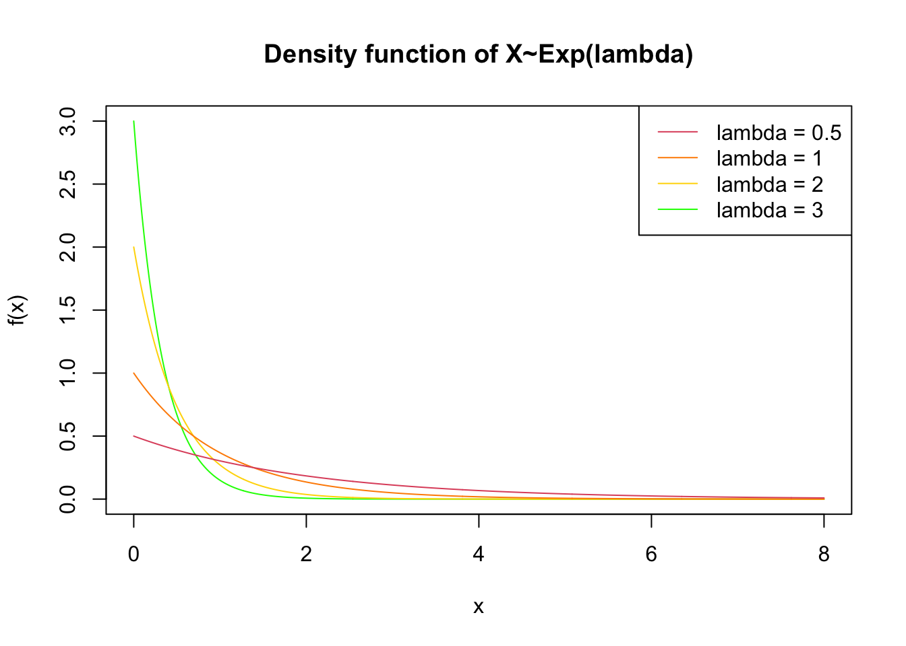
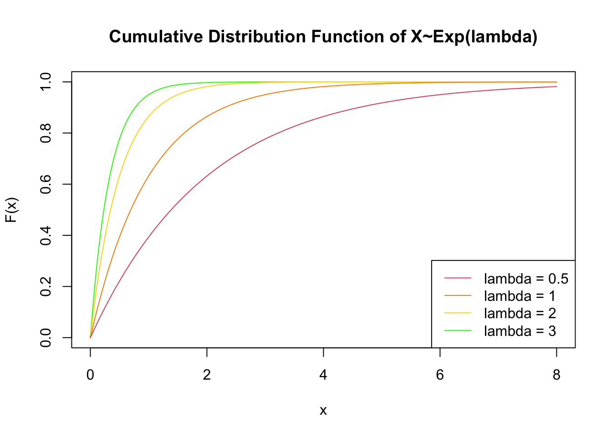
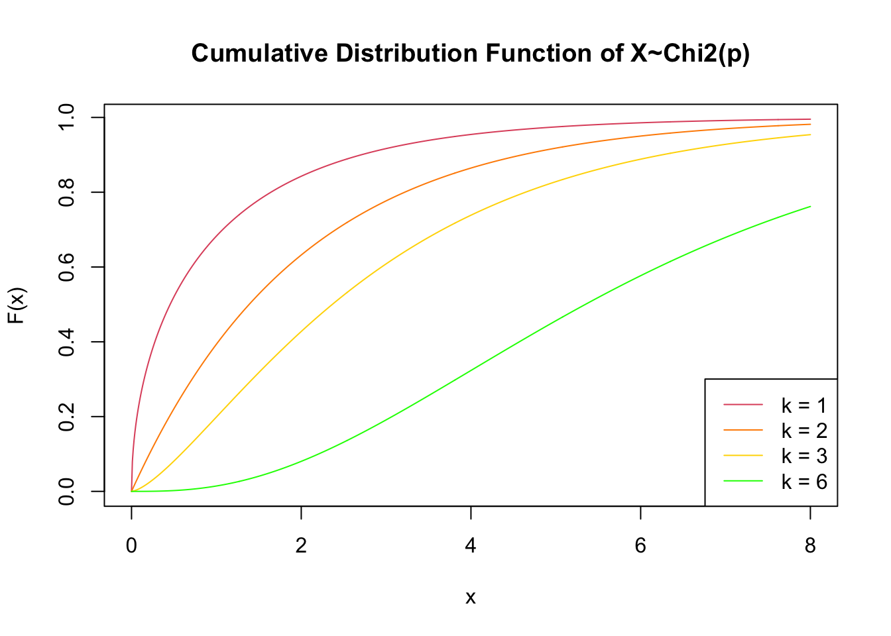
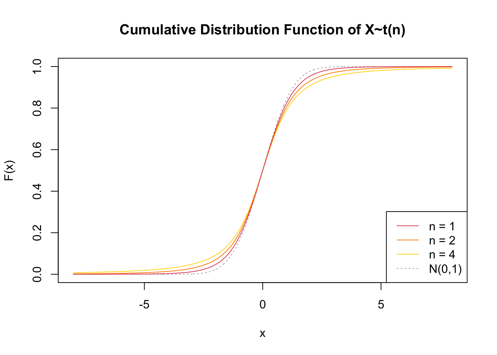
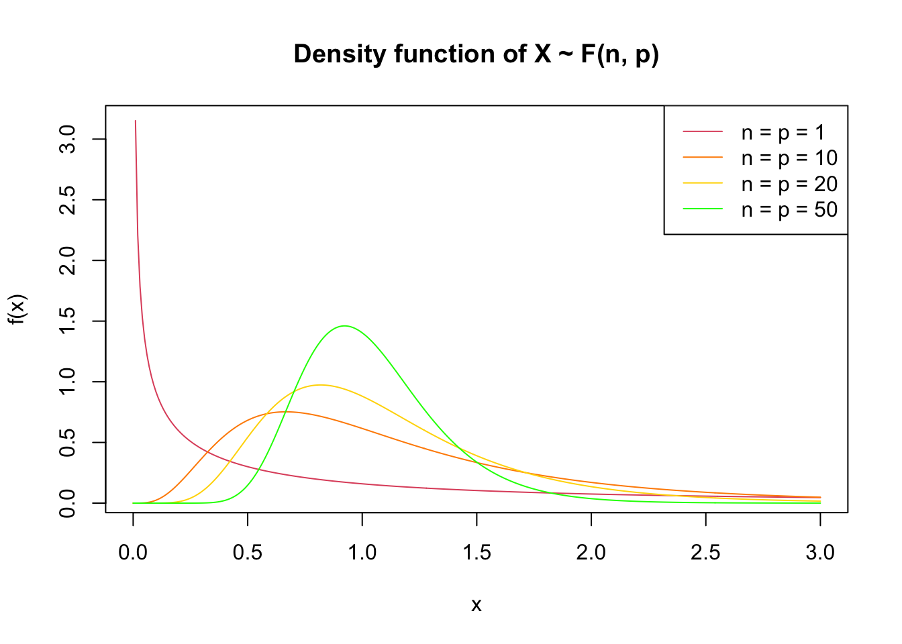
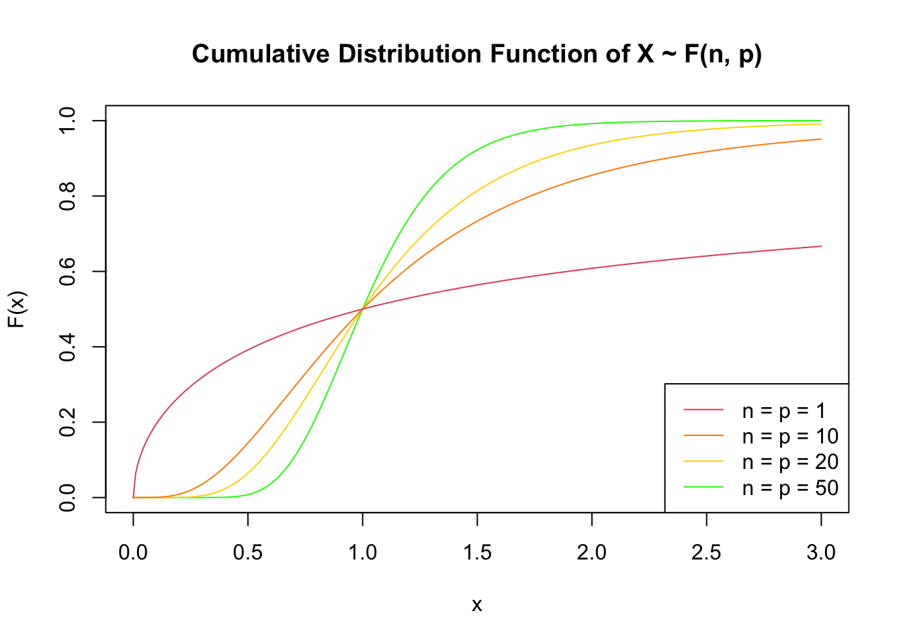

x <- seq(0,8,0.01)
dExp.5 <- dexp(x, .5)
dExp1 <- dexp(x, 1)
dExp2 <- dexp(x, 2)
dExp3 <- dexp(x, 3)15 Usual Continuous Distributions
In addition to the normal and uniform distributions, a number of other continuous distributions are often used, corresponding to different assumptions about the processes that shape the population.
15.1 Exponential
A random variable \(X \in [0;+\infty[\) following an exponential distribution with parameter \(\lambda > 0\) can be expressed as: \(X \sim \epsilon(\lambda)\) with expectation \(E(X) = 1/ \lambda\) and variance \(Var(X) = 1/ \lambda^2\).
Its density function can be written as:
\[f(x) = λ {e}^{- λ x} \text{ for } x \geq 0\] \[f(x) = 0 \text{ for } x < 0\].
Its cumulative distribution function is defined by:
\[F_X(x) = 1 - \exp{(- \lambda x)} \text{ for } x \geq 0\] \[F_X(x) = 0 \text{ for } x < 0\]
plot(x, dExp3, type = 'l', col = 'green',
main = 'Density function of X~Exp(lambda)', ylab = 'f(x)')
lines(x, dExp2, col = 'gold')
lines(x, dExp1, col = 'darkorange')
lines(x, dExp.5, col = 2)
legend("topright", lty = 1,
legend = c("lambda = 0.5", "lambda = 1",
"lambda = 2", "lambda = 3"),
col = c(2, 'darkorange', 'gold', 'green'))
plot(x, pexp(x, 3), type = 'l', col = 'green',
main = 'Cumulative Distribution Function of X~Exp(lambda)', ylab = 'F(x)')
lines(x, pexp(x, 2), col='gold')
lines(x, pexp(x, 1), col='darkorange')
lines(x, pexp(x, .5), col=2)
legend("bottomright", lty = 1,
legend = c("lambda = 0.5", "lambda = 1", "lambda = 2", "lambda = 3"),
col = c(2, 'darkorange', 'gold', 'green'))
15.2 Chi-square
A random variable \(X\) following a chi-square (or khi-square) distribution can be expressed as: \(X \sim \chi^2(p)\) with parameter \(p > 0\), expectation \(E(X) = p\), variance \(Var(X) = 2p\).
Its density function is
\[f_X(x) = \dfrac {1} {2^{n/2} \gamma(n/2)} x^{(n/2)-1} \exp{(\dfrac{-x}{2})} \text{ for } x \geq 0\]
\[f_X(x) = 0 \text{ for } x < 0\]
x <- seq(0,8,0.01)
dChiSq1 <- dchisq(x, 1)
dChiSq2 <- dchisq(x, 2)
dChiSq3 <- dchisq(x, 3)
dChiSq6 <- dchisq(x, 6)plot(x, dChiSq1, type = 'l', col = 2, ylim = c(0, 1.25),
main = 'Density function of X~Chi^2(p)', ylab = 'f(x)')
lines(x, dChiSq2, col = 'darkorange')
lines(x, dChiSq3, col = 'gold')
lines(x, dChiSq6, col = 'green')
legend("topright", lty = 1,
legend = c("p = 1", "p = 2", "p = 3", "p = 6"),
col = c(2, 'darkorange', 'gold', 'green'))
plot(x, pchisq(x, 1), type = 'l', col = 2,
main = 'Cumulative Distribution Function of X~Chi2(p)', ylab = 'F(x)')
lines(x, pchisq(x, 2), col='darkorange')
lines(x, pchisq(x, 3), col='gold')
lines(x, pchisq(x, 6), col='green')
legend("bottomright", lty = 1,
legend = c("p = 1", "p = 2", "p = 3", "p = 6"),
col = c(2, 'darkorange', 'gold', 'green'))
15.3 Student t-dsitribution
A random variable \(X\) following a student distribution, can be expressed as: \(X \sim t(n)\) with parameter \(n\) degrees of freedom.
Its density functionis
\[f(x) = \dfrac{1}{\sqrt{n\pi}} \dfrac {\gamma{(\dfrac{n+1}{2})}} {\gamma{(\dfrac{n}{2})}} \dfrac {1} {(1+\dfrac{x^2}{n})^{(n+1)/2}} \text{ for all } x\in R\] We have: \[E(X) = 0 \text{ for } n \ge 2\] \[Var(X) = \dfrac{n}{n-2} \text{ for } n \ge 3\]
If we have a random variable \(U \sim N (0, 1)\) and a random variable \(X \sim \chi^2(n)\) which are independent, then the random variable \(T_n = \dfrac{U}{\sqrt{X/n}}\) follows a student distribution \(t(n)\)
x <- seq(-8, 8, 0.01)
dStudent1 <- dt(x, 1)
dStudent2 <- dt(x, 2)
dStudent4 <- dt(x, 4)plot(x, dNorm01, type = 'l', col = 'darkgray', xlim = c(-4, 4), lty = 3,
main = 'Density function of X~t(n)', ylab = 'f(x)')
#> Error in eval(expr, envir, enclos): object 'dNorm01' not found
lines(x, dStudent4, col = 'gold')
#> Error in plot.xy(xy.coords(x, y), type = type, ...): plot.new has not been called yet
lines(x, dStudent2, col = 'darkorange')
#> Error in plot.xy(xy.coords(x, y), type = type, ...): plot.new has not been called yet
lines(x, dStudent1, col = 2)
#> Error in plot.xy(xy.coords(x, y), type = type, ...): plot.new has not been called yet
legend("topright", lty = c(rep(1, 3), 3),
legend = c("n = 1", "n = 2", "n = 4", "N(0,1)"),
col = c(2, 'darkorange', 'gold', 'darkgray'))
#> Error in (function (s, units = "user", cex = NULL, font = NULL, vfont = NULL, : plot.new has not been called yetplot(x, pnorm(x), type = 'l', col = 'darkgray', lty = 3,
main = 'Cumulative Distribution Function of X~t(n)', ylab = 'F(x)')
lines(x, pt(x, 2), col='gold')
lines(x, pt(x, 3), col='darkorange')
lines(x, pt(x, 6), col=2)
legend("bottomright", lty = c(rep(1, 3), 3),
legend = c("n = 1", "n = 2", "n = 4", "N(0,1)"),
col = c(2, 'darkorange', 'gold', 'darkgray'))
15.4 Fisher-Snedecor
A random variable \(X\) following a Fisher-Snedecor distribution can be expressed as \(X \sim F(n, p)\) with parameters \(n\) and \(p\) degrees of freedom.
Its density function is
\[f_X(x) = \dfrac {\gamma(\dfrac{n+p}{2})} {\gamma(\dfrac{n}{2}) \gamma(\dfrac{p}{2})} (\dfrac{n}{p})^{(n/2)} \dfrac{x^{\dfrac{n-2}{2}}}{(1 + \dfrac{n}{p}x)^{\dfrac{n-2}{2}}} \text{ for } x \geq 0\] \[f_X(x) = 0 \text{ for } x < 0\]
We have:
\[E(X) = \dfrac{p}{p-2} \text{ for } p \ge 3\] \[Var(X) = \dfrac{2p^2(n+p-2)}{n(p-2)^2(p-4)} \text{ for } p \ge 5\]
If we have two random variables \(X\) and \(Y\) independent such that \(X \sim \chi^2(n)\) and \(Y \sim \chi^2(p)\), then the random variable \(\dfrac{X/n}{Y/p}\) follows a Fisher distribution \(F(n, p)\)
x <- seq(0, 3, 0.01)
dF1 <- df(x, 1, 1)
dF10 <- df(x, 10, 10)
dF20 <- df(x, 20, 20)
dF50 <- df(x, 50, 50)plot(x, dF1, type = 'l', col = 2,
main = 'Density function of X ~ F(n, p)', ylab = 'f(x)')
lines(x, dF10, col = 'darkorange')
lines(x, dF20, col = 'gold')
lines(x, dF50, col = 'green')
legend("topright", lty = 1,
legend = c("n = p = 1", "n = p = 10", "n = p = 20", "n = p = 50"),
col = c(2, 'darkorange', 'gold', 'green'))
plot(x, pf(x, 50, 50), type = 'l', col = 'green',
main = 'Cumulative Distribution Function of X ~ F(n, p)', ylab = 'F(x)')
lines(x, pf(x, 20, 20), col='gold')
lines(x, pf(x, 10, 10), col='darkorange')
lines(x, pf(x, 1, 1), col=2)
legend("bottomright", lty = 1,
legend = c("n = p = 1", "n = p = 10", "n = p = 20", "n = p = 50"),
col = c(2, 'darkorange', 'gold', 'green'))